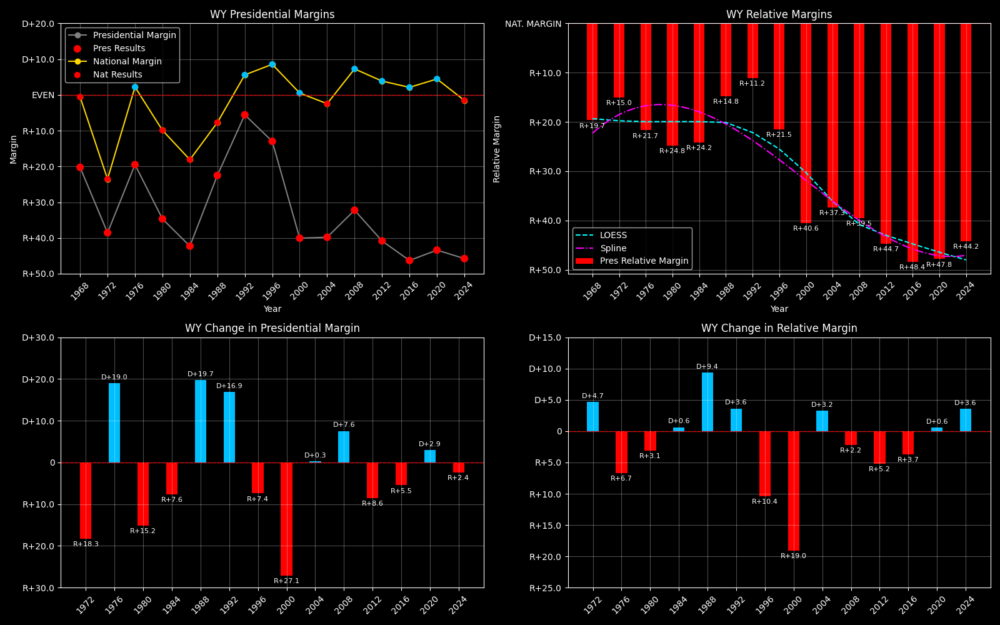

← Back to Map

Wyoming (WY) statewide
Wyoming (WY) — Data
| Year | D | R | Margin | Rel. Margin | Nat. Margin | Margin Δ | Rel. Margin Δ | Nat. Margin Δ |
|---|
| 1976 | 62,239(40.2%) | 92,717(59.8%) | R+19.7 | R+21.9 | D+2.3 | | | |
| 1980 | 49,427(30.9%) | 110,700(69.1%) | R+38.3 | R+28.0 | R+10.3 | R+18.6 | R+6.0 | R+12.6 |
| 1984 | 53,370(28.6%) | 133,241(71.4%) | R+42.8 | R+24.6 | R+18.2 | R+4.5 | D+3.4 | R+7.9 |
| 1988 | 67,113(38.6%) | 106,867(61.4%) | R+22.8 | R+15.2 | R+7.7 | D+20.0 | D+9.4 | D+10.6 |
| 1992 | 68,160(46.2%) | 79,347(53.8%) | R+7.6 | R+14.8 | D+7.2 | D+15.3 | D+0.4 | D+14.9 |
| 1996 | 77,934(42.5%) | 105,388(57.5%) | R+15.0 | R+24.6 | D+9.6 | R+7.4 | R+9.8 | D+2.4 |
| 2000 | 60,481(29.0%) | 147,947(71.0%) | R+42.0 | R+42.5 | D+0.5 | R+27.0 | R+17.9 | R+9.1 |
| 2004 | 70,776(29.7%) | 167,629(70.3%) | R+40.6 | R+38.2 | R+2.5 | D+1.3 | D+4.3 | R+3.0 |
| 2008 | 82,868(33.4%) | 164,958(66.6%) | R+33.1 | R+40.7 | D+7.5 | D+7.5 | R+2.5 | D+10.0 |
| 2012 | 69,286(28.8%) | 170,962(71.2%) | R+42.3 | R+46.3 | D+4.0 | R+9.2 | R+5.7 | R+3.5 |
| 2016 | 55,973(24.3%) | 174,419(75.7%) | R+51.4 | R+53.7 | D+2.3 | R+9.1 | R+7.4 | R+1.7 |
| 2020 | 73,491(27.5%) | 193,559(72.5%) | R+45.0 | R+49.5 | D+4.5 | D+6.4 | D+4.2 | D+2.2 |
| 2024 | 69,527(26.5%) | 192,633(73.5%) | R+47.0 | R+45.5 | R+1.5 | R+2.0 | D+4.0 | R+6.0 |
Column explanations
- Year
- Election year.
- D
- Number of votes for the Democratic candidate (raw count).
- R
- Number of votes for the Republican candidate (raw count).
- Margin
- Margin between the two major-party candidates ((D - R)/(D + R)).
- Rel. Margin
- The presidential margin relative to the national presidential margin (Margin - Nat'l Margin).
- Nat. Margin
- The national presidential margin for that year ((D_total - R_total)/(D_total + R_total)).
- Δ
- Change (delta) in the value from the previous election year. Blank if no data for previous year.